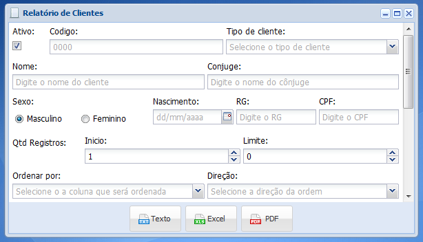
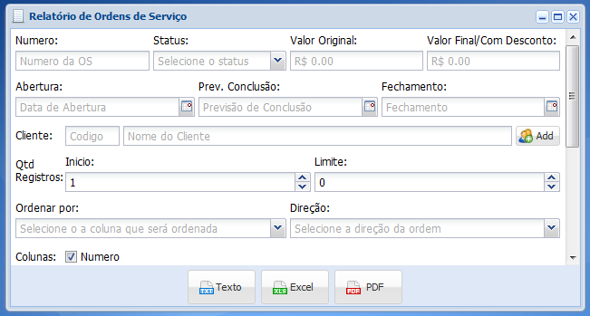

Essa é a tela para geração de relatórios de Clientes e Ordem de Serviço nos formatos de Texto, Excel e PDF.


Nas janelas de emissão de relatórios, selecione as condições com os dados que pretende obter e clique no botão conforme o formato desejado (Texto, Excel, PDF) para que o relatório seja gerado.